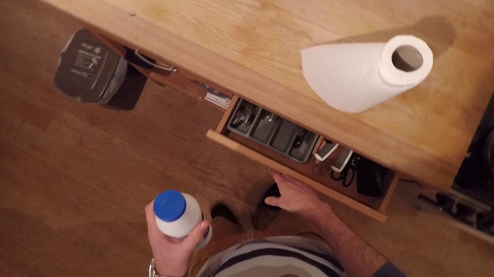

Sample 001



Caption comparison
Before
The drawer appears to be partially open, revealing a variety of different items, including utensils, spoons, and other household items. The drawer's contents are visible in the middle of the drawer, which is cluttered with various items, such as spoons and other kitchen tools. There are a number of items on the counter, including silverware, knives, and spoons.
The drawer appears partially open, revealing an assortment of items arranged in a compartmentalized tray. The tray is divided into sections, each holding different utensils and tools. Visible items include several knives with varying blade lengths neatly slotted into individual sections, a pair of scissors, and assorted cutlery such as forks and spoons. The items are organized, but there's a slight overlap of handles, indicating a casual placement rather than a meticulous order. On the far right, obscured by the angle of the drawer, are objects not clearly identifiable, suggesting additional storage beyond the immediate view. The drawer's wood finish matches the surrounding cabinetry, integrating it seamlessly into the kitchen's overall design.
During
In this frame, the utensils remain in the same position as before, indicating that the drawer has been opened. The drawer's contents remain the same, with the exception of a handful of ice cubes, which appear to have been stored in a separate compartment.
In this frame, the drawer is pulled further open, and more items are now visible. The previously seen utensils remain in place, but additional tools come into view, such as a handheld can opener, more cutlery, and possibly kitchen gadgets like a peeler or a bottle opener. There's a noticeable increase in the variety of items as compared to the first frame, and the array of utensils suggests a well-equipped kitchen drawer. The organization of the drawer remains consistent, with each item still in its designated compartment, yet the drawer's contents are densely packed, indicating a well-used space.
After
In this frame, the utensils remain in the same position as before, indicating that the drawer has been removed from its original position. The drawer's contents are still present, but there are still a number of items on the table, such as a spoon or a knife.
The drawer is now fully extended, offering a complete view of its contents. The organization is consistent throughout the entire length of the drawer, with each tool and utensil visible and accessible. The full extension reveals items that were previously hidden, including larger utensils and possibly some kitchen gadgets that are tucked away towards the back. The variety of items, from basic cutlery to more specialized tools, suggests a comprehensive collection designed to cater to a wide range of culinary tasks. The presence of multiple knives and utensils hints at the preparation of diverse meals, and the full view emphasizes the practical organization of the drawer.
Transition
Over the sequence of frames, the kitchen drawer undergoes a transition from being partially open to being fully open. Initially, the drawer is partially open, revealing a kitchen drawer with its contents in view. As the drawer's contents move through the frame, the person's hand interacts with it, indicating a deliberate action. By the final frame, there is a clearer understanding of the individual's interaction with the drawer, suggesting that the drawer may be open for a specific purpose.
As the drawer opens progressively from the first to the third frame, there's a clear transition from partial visibility to full exposure of its contents. Initially, only a fraction of the drawer's items is visible, mainly knives and some cutlery. As the drawer opens further, more items are revealed, expanding the view to include a variety of kitchen tools. The final frame shows the drawer in its fully extended state, displaying an orderly arrangement of utensils, which reflects a well-stocked and systematically organized kitchen drawer. Throughout these transitions, the orderliness of the drawer's contents remains intact, suggesting a functional and well-maintained storage system.